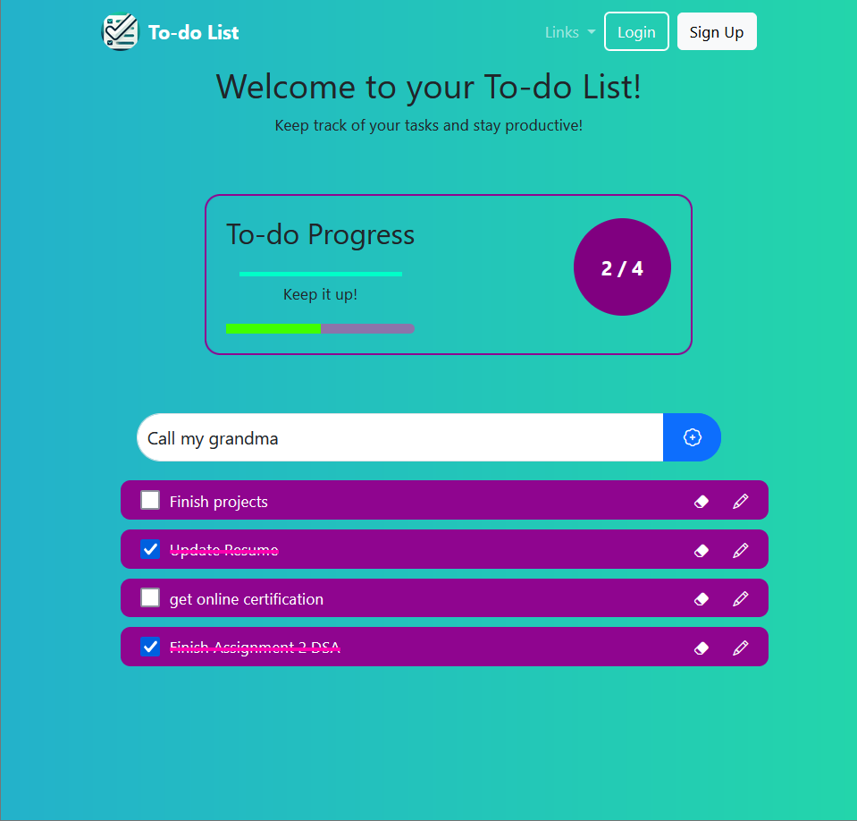
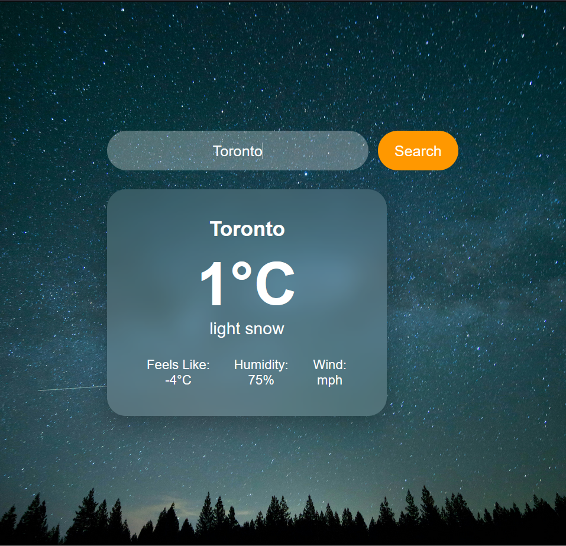

IT Support Technician / Help Desk Analyst / Technical Support
Software Support Technician graduate from Mohawk College with hands-on experience troubleshooting software, supporting end users, and working in fast-paced service environments. Ready to contribute to an IT support or help desk team.
About Me
I'm a recent graduate of the Software Support Technician program at Mohawk College in Hamilton, Ontario. My training covered IT support fundamentals including operating systems, networking, hardware, software troubleshooting, and cloud computing concepts through the Microsoft Azure AZ-900 curriculum.
Outside of my studies, I built and tested several software applications, gaining practical experience identifying bugs, tracing system errors, validating data, and thinking through how users interact with technology. I also bring customer service experience from fast-paced environments where clear communication and quick problem resolution were part of the daily job — including hands-on work with POS systems and end-user support.
I'm currently looking for an entry-level IT Support, Help Desk, or Technical Support role where I can apply my technical training, grow within a support team, and help users resolve issues efficiently.
What I Work With
Core competencies relevant to IT Support and Help Desk roles
What I've Built
Personal projects built and tested independently — each focused on understanding system behavior, debugging issues, and building reliable functionality.

Built a task management application using HTML, CSS, and JavaScript with database integration to store and retrieve task data. The main technical challenge was ensuring data persisted correctly across sessions and that the interface responded as expected under different user inputs — including empty fields, duplicate entries, and unexpected characters.
I spent a significant portion of the project testing edge cases, tracing where data was being dropped or corrupted, and fixing validation logic to prevent user errors from breaking the application. This process gave me practical experience with the debugging cycle: reproducing an issue, isolating the cause, applying a fix, and verifying the result.
View on GitHub
Developed a weather application that retrieves real-time data from an external API and displays it through a React front end. A key focus was handling failure scenarios gracefully — what happens when the API is unavailable, returns unexpected data, or the user's input doesn't match a valid location.
I implemented error handling to catch failed API calls and display clear feedback to the user instead of crashing the application. Testing under various conditions — valid cities, invalid input, slow responses — helped me understand how dependent systems fail and how to design around those failures, which is directly applicable to diagnosing integration issues in a support context.
View on GitHubBuilt an interactive card game application in React, implementing game logic, state management, and a responsive user interface. The most valuable part of this project from a technical support perspective was identifying and resolving unexpected application behavior — game state becoming inconsistent under rapid user input, or edge cases in card logic producing results that shouldn't be possible.
Resolving these issues required methodically stepping through the application state, understanding where logic broke down, and applying targeted fixes. The project reinforced the importance of testing not just the expected path, but the scenarios that real users actually encounter.
View on GitHubBackground
Mohawk College · Hamilton, Ontario · 2025
Relevant Coursework
Microsoft · Currently pursuing
Topics Covered
Get In Touch
Open to entry-level IT Support, Help Desk, and Technical Support opportunities in the Hamilton and Greater Toronto Area. Feel free to reach out.